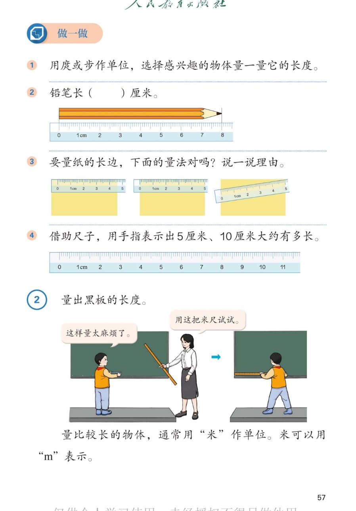

🔊 四、厘米和米 · 课本第 57 页 · 做一做与例2 量黑板
人教版《数学》二年级上册 · 有声图文带读 · 先想后看解析 · 正确量法 · 认识米(m)
题数
6
认知
2
强化
3
拓展
1
本页重点
铅笔读数 · 量法对不对 · 手指比长度 · 量长物体用米
🎧 分两步学：
① 解析教材图片
——纯声音读图，读到哪一块哪一块闪动提示；关键处先倒计时让你思考，再在图片下方给出解析并朗读。
② 分层提问练习
——六道分层题（认知 / 强化 / 拓展），先思考再展开解析、朗读参考答案；这一步不再回到图片。
也可以随时点任意一句话、图上任意一块单独听；点课本文字卡还会展开答案。
教材图片（点块听读，读到哪块哪块闪）

📖 人教版《数学》二年级上册 · 课本第 57 页 · 图片仅供个人学习，版权归人民教育出版社所有
🤔 想一想（点我可跳过）
课本的文字（点句子：听读 + 看答案）
做一做1
用庹或步量物体
看答案 ▾
示例：用
庹
量黑板的宽（大约 2 庹多）；用
步
量教室的长（大约 10 步）；
量的时候单位长度要一样大，一庹挨一庹、一步挨一步。
做一做2、3
铅笔读数 + 量法判断
看答案 ▾
第 2 题：铅笔从
0 到 7
，长
7 厘米
；
第 3 题：
对齐刻度 0、贴紧纸边
的量法对；
没对齐 0
的、
斜着放
的都不对。
做一做4
手指比 5 厘米、10 厘米
看答案 ▾
先在尺子上从 0 比
5 厘米
，两个手指卡住这段距离，再离开尺子保持不变；
10 厘米就是
两个 5 厘米
接起来，大约一拃长；
💡 5厘米、10厘米也是随身"活尺子"
例2
量黑板 → 认识米（m）
看答案 ▾
用小尺子量黑板：量一次记一次，
太麻烦
；
用
米尺
量，又快又方便；
量
比较长
的物体，通常用
米
作单位，米用
m
表示。
分层提问练习（先想后看解析）
✏️
认知
做一做第 2 题：铅笔长多少厘米？
看解析
🤔 想一想
解析：
铅笔长
7 厘米
。
左端对
0
，右端对着
7
，就是 7 厘米。
📄
认知
做一做第 3 题：哪种量法对？
看解析
🤔 想一想
解析：
对齐 0、贴紧纸边
的量法对；
没对齐刻度 0 的、
斜放
的都不对，量出的数会不准。
😤
强化
用小尺子量黑板，为什么男孩说太麻烦了？
看解析
🤔 想一想
解析：
小尺子短，量一次只有十几厘米，要量
很多次
；
换成
米尺
，一次一大段，量得又快又准。
📏
强化
量比较长的物体用什么单位？怎么表示？
看解析
🤔 想一想
解析：
用
米
作单位，用
m
表示；
量黑板、量教室、量操场都常用米。
🤏
强化
怎样用手指表示 5 厘米和 10 厘米？
看解析
🤔 想一想
解析：
在尺子上比出
0 到 5
，手指卡住记牢 → 5 厘米；
比出
0 到 10
，大约一拃宽 → 10 厘米。
💡 随时用手比一比，估长本领越来越准
🌈
拓展
课本的宽和教室门的高，各用什么单位量合适？
看解析
🤔 想一想
解析：
课本的宽是
短的
→ 用
厘米
；
门的高是
长的
→ 用
米
。
🌈 短用厘米，长用米，选对单位才好交流
① 解析教材图片
② 分层提问练习
⏹ 停止
纯声音 + 高亮跟随 · 想好才出解析
← 返回导航